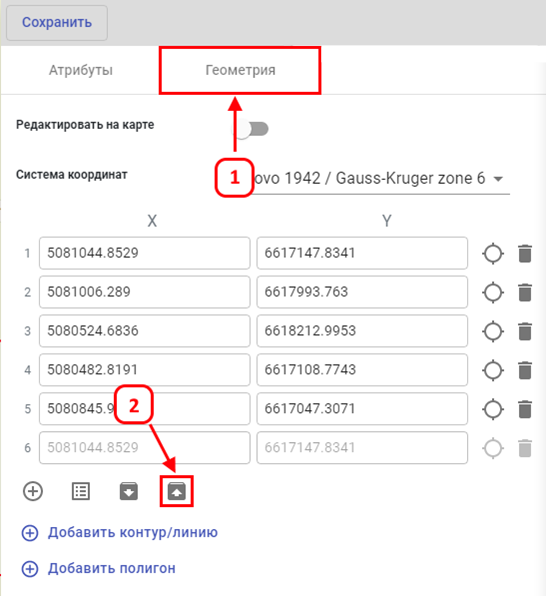

<p>Для выгрузки координат существующего объекта, применяется экспорт в CSV, для этого требуется:</p>
<ol>
  <li>Перейти на вкладку <i>«Геометрия»</i>.</li>
  <li>Кликнуть на значок <i>«Экспорт координат»</i>.</li>
  <li>После этого у вас начнётся скачивание файла CSV с координатными данными.</li>
</ol>
<center></center>
